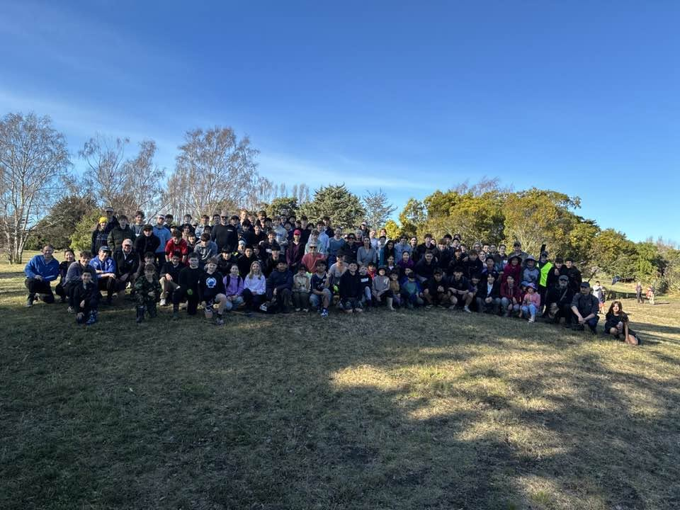

Who are we?
A community charity growing native trees and plants for the Christchurch Red Zone.

Growing a native corridor
We grow native trees and plants suitable for native bird food and habitat within the Christchurch Red-Zone.
We cultivate plants sourced from Port Hills in satellite nurseries managed by schools and community groups. Throughout the year, we run events planting and mulching within the Christchurch Red-Zone.
In time, the plants we grow will form a corridor for native birds to return to the Christchurch city centre.

Eco-sourced seed
All seed grown is eco-sourced from the Port Hills area. Eco-sourcing enhances both survival and growth rates for local native plants.

Food and habitat for native birds
Tree and plant choice is made to provide year around food to allow resident populations of White eye, Bellbird, Tui, and Kereru to flourish in what is currently an introduced plant desert that does not contain the nectar and soft fruit producing trees and shrubs native birds require.
CCC Parks Ecologists have input as to species choice and location. Mulch is used to reduce weed growth, and optimize water retention.

Nursery kits for schools
We provide free Eco-Action Nursery Kits to schools and community organisations and then donate the plants grown by them to planting out the Red-Zone.
School students are taught ecological principles of environmentalism as well as getting practical hands on instruction in propagation and planting techniques.

Join us
We hope you'll join us! Consider joining our Facebook group, or following our Instagram to stay up to date.